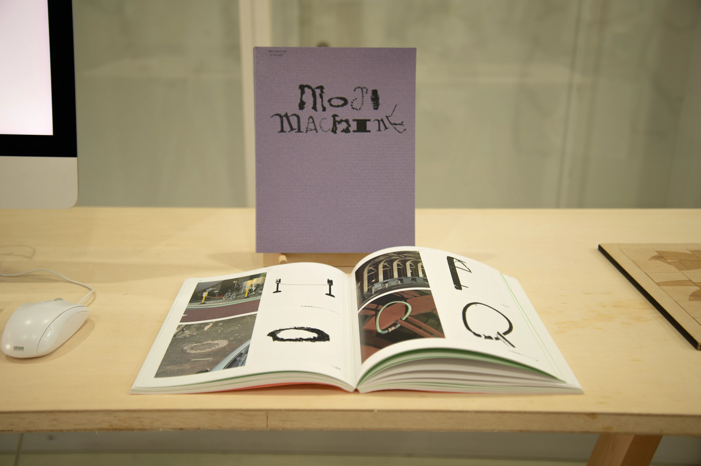
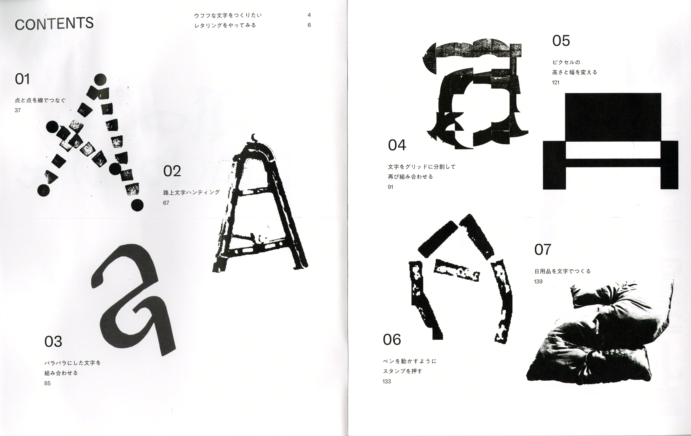
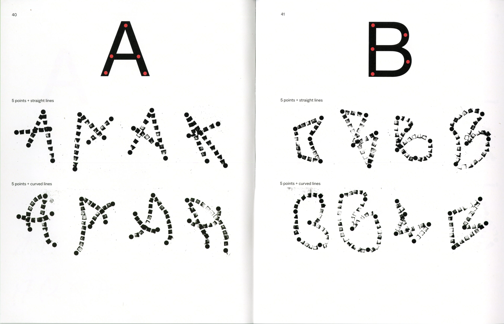
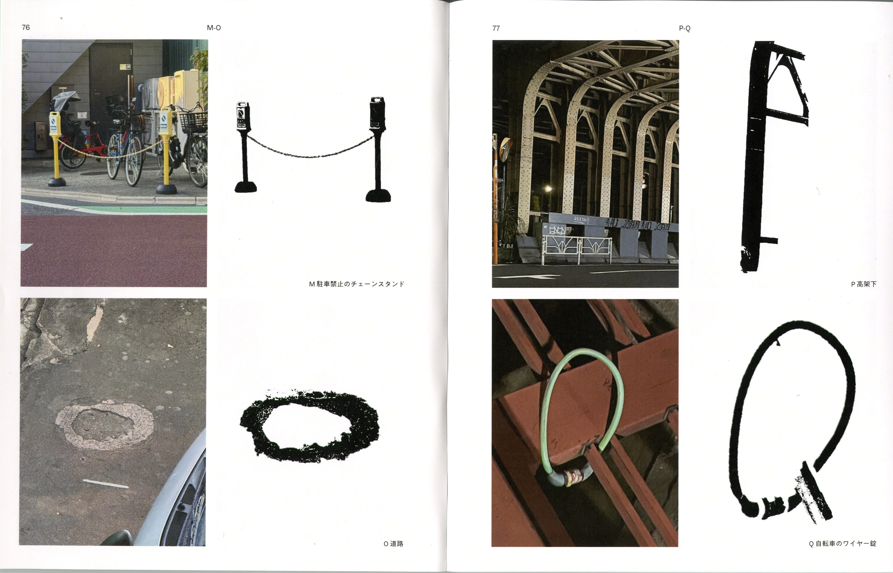
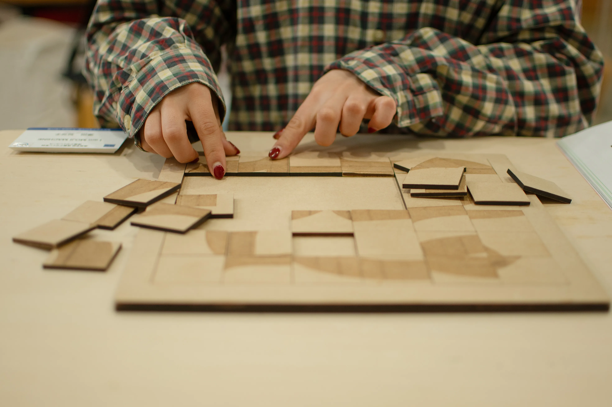
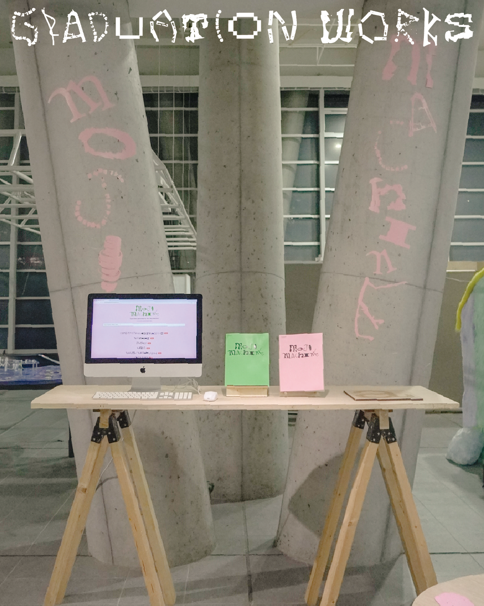

2025（Graduation Works）
I am MOJI MACHINE
私にとって文字とは、心がうふふとなるものです。
雨の日のじめじめした満員電車でも、車窓から見える景色の中に自分の心をくすぐる看板の文字を見つけると、たちまち心は元気になります。
そんな「うふふ」な文字をつくるために、佐藤雅彦氏の「作り方が新しければ、自ずとできたものは新しい」という考え方を参考にし、自らを「文字マシーン」と名付け、7つの作り方を通して文字を制作しました。
228×160×81(mm) 148×262×6(mm)
紙（ニュースプリントパッド, 洋白紙, レザック96オリヒメ, タント）/ 木材 / MDF / クラッシュベロア / 手芸わた / カッティングシート / アクリル





